Pure Modern WordPress Portfolio & Blog Theme
- By: GT3 Themes Team
- www.gt3themes.com
Theme Installation
There are several ways to install wp themes, we do prefer using FTP but you can choose other ways. Please read more about theme installation on the official website at http://codex.wordpress.org/Using_Themes
If you choose to use ftp, please do the following:- please unzip the installable zip file that you downloaded from ThemeForest (pure.zip);
- upload "Pure" theme folder to the theme directory of your WordPress via ftp;
- log into your WordPress admin dashboard and activate "Pure" theme in the Appearance => Themes section;
Note, Pure theme contains built-in GT3 Page Builder. You don't need install the plugin. It will be activated automatically on the pages and posts sections after theme installation.
Theme Options Panel Overview
This theme comes with its own theme options panel. You can manage general theme settings panel. Let's review it:
- General: right there you can upload your own logos, change copyright, phone number, public email, import sample data, put your google analytics code etc;
- Fonts: the themes uses google web fonts. Please choose the desired font from the drop down menu for main font, typograpy H1, H2, H3, H4, H5,H6;
- Socials: the full list of available social link;
- View Options: adjust theme view options (responsive, header social icons, header types, page width, etc);
- Color Options: adjust theme color.
Import Demo Content
To import the demo content, please go to Pure theme options panel => General section and at the very bottom there is "Import demo content" button, please click it. It may take several minutes to import the entire demo content.
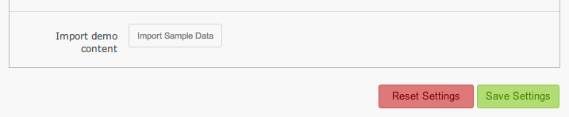
Please note:- If the demo content was not imported (the standard export/import .xml option is used in the theme), it means that there is a server side issue or our demo page is not accessible via http (you can check the demo on our site or via ThemeForest).
Sometimes, the content can't be downloaded from external site to your wordpress content folder because of the folder permissions, server configuration, temporary site URL etc. In this case, we recommend you to contact your hosting provider regarding this issue. - During the sample data import, some images won't be imported, in the galleries. You will get the empty image placeholders. Please remove them and add your own images to the galleries.
Theme Layout Settings
The theme has the options which allow you to change it.
The Header. You can select the header from proposed types. To select the one, please go to Theme Options Panel => View Options section. Use "Header type" to change the parameter.
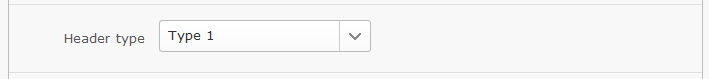
The Header social icons. You can hide or display menu icons, please go to Theme Options Panel => View Options section. Use "Header social icons" option to change it.
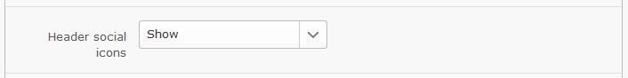
The Default page width. Please select the page width type Normal or Full width, go to Theme Options Panel => View Options section. Use "Default page width" option to change it.

Please note that if you want to have a custom layout for the certain page, you can do that using the custom layout option on the page.
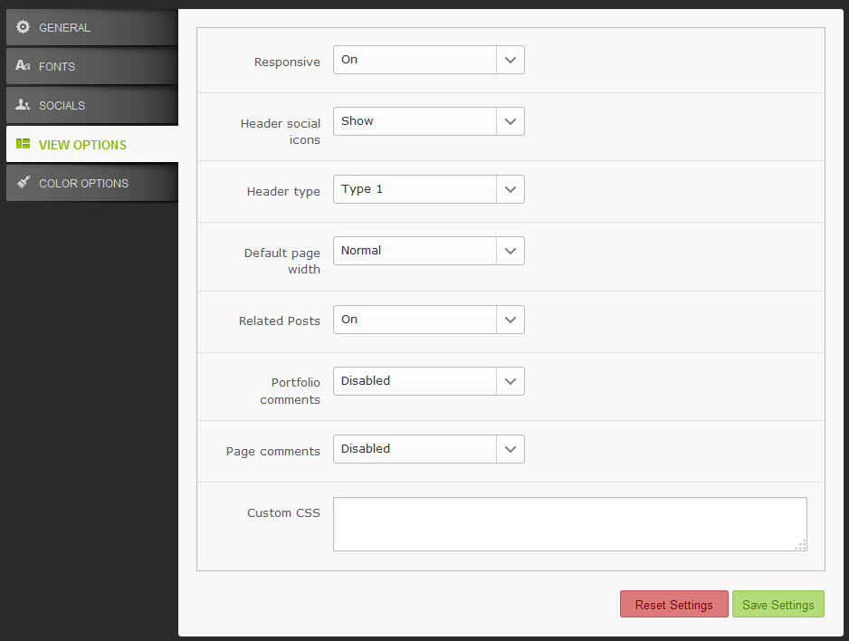Theme Color Settings
You can change the main theme color.
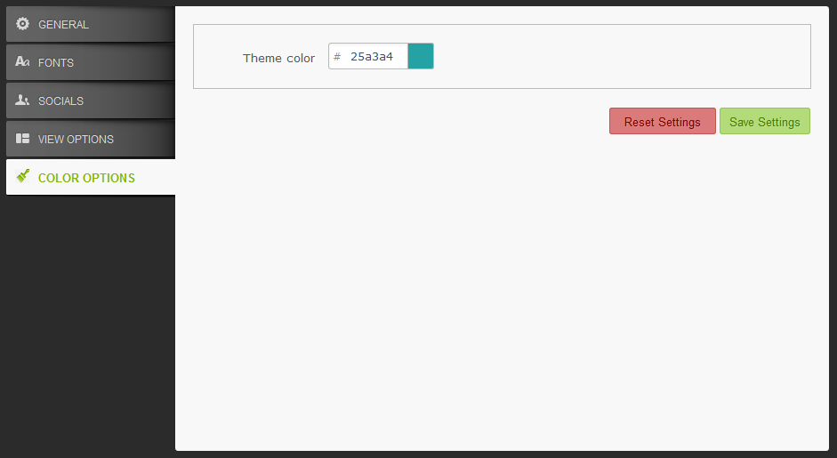
Custom Logo Setup
To change the current existing logo, please go to Theme Options Panel => General section. Use the "upload image" option to upload your own logo. Once the logo is uploaded, please put its height and width to the required fields.
Taking into consideration the fact that this theme is retina ready, you have to upload your logo in 2 sizes bigger to look great on tablet and mobile devices. For example, if your site logo is 200x100, the retina version will be 400x200.
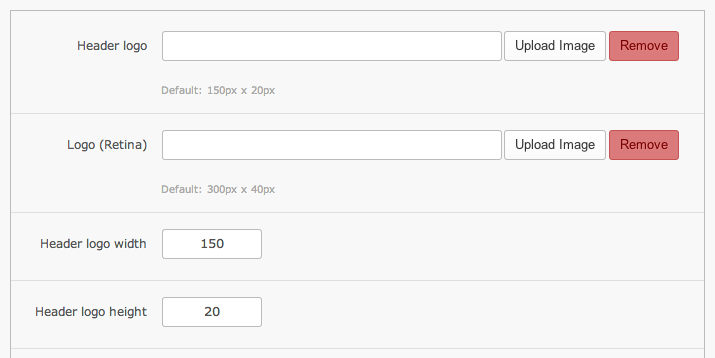
GT3 Page Builder Modules
This WordPress theme comes with the built-in GT3 Page Builder section, which allows you to create custom page layouts with ease.
You don't need to install GT3Page Builder plugin. Here is the brief overview of all available page builder modules.
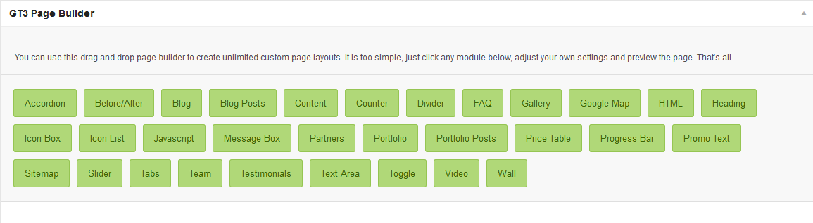
Here is the full list of available modules:- Accordion - add simple accordion style with collapsible components;
- Before & After - add an image with before/after effect;
- Blog - display standard style blog to the page;
- Blog Posts - display blog posts from different categories;
- Content - display entire content available in the visual editor;
- Divider - add divider to separate module blocks;
- Gallery - display gallery from existing gallery list;
- Google Map - add simple google map;
- HTML - add any HTML code or shortcode to display on the page;
- Heading - add simple heading;
- Icon Box - add content block with the icon;
- Icon List - add icon list with the text link option;
- Javascript - add javascript code to run on the page;
- Message Box - add different message box types;
- Partners - display the partners logos from existing list;
- Portfolio - add non-ajax portfolio to the page;
- Portfolio Posts - display portfolio posts from different categories;
- Price Table - add simple and advanced price table;
- Progress Bar - add advanced and flexible progress bar;
- Promo Text - add special promo text with call to action button;
- Sitemap - add simple sitemap;
- Slider - add any slider plugin that uses shortcodes;
- Tabs - add tabbed content area;
- Team - display selected team members from existing list;
- Testimonials - display the selected testimonials from existing list;
- Text Area - add simple text area;
- Toggle - add simple toggle style with collapsible components;
- Video - add vimeo or youtube video.
Contact Form 7 Plugin Installation
There are several ways to install WordPress plugin, we do prefer using FTP but you can choose other ways. Please read more about plugin installation on the official website at http://codex.wordpress.org/Managing_Plugins
If you choose to use ftp, please do the following:
- please download the plugin at http://wordpress.org/plugins/contact-form-7/
- please unzip the plugin zip file that you downloaded and upload to Plugin folder to the wp-content/plugins folder in your WordPress directory online via FTP.;
- log into your WordPress admin dashboard and activate "Contact Form 7" plugin in the Plugins => Installed Plugins section;
- once the plugin is activated, you can start creating contact form.
- do not forget to read the Contact Form 7 documentation for obtatining information.
Contact Form 7 Plugin Usage
The first thing you have to do is to create a contact form . Please go to the Contact plugin section. You can see it in the main WordPress menu.
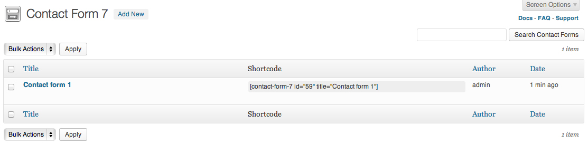
If you want to get the form titles appear inside the contact form fields follow the instructions:
- please open the created contact form in the plugin section;
- add special code to the Form area.
- save changes.
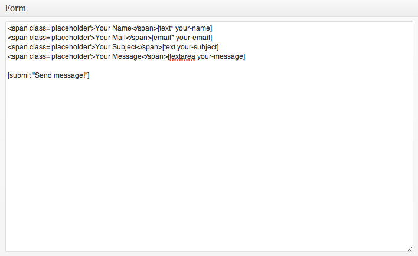
Once the form is created, please follow these steps to add the contact form to the page- please copy the contact form shortcode, please see screenshot above;
- then open the page where you want to add the contact form to;
- add "HTML" module to the page, click edit and put the contact form shortcode into the text area (see screenshot below);
- that's all, please preview the page.
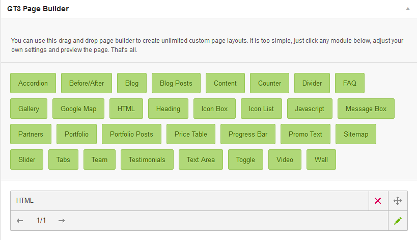
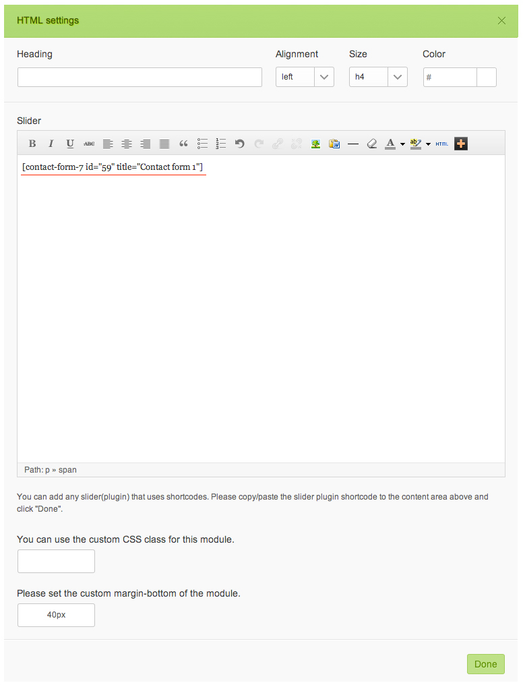
Contact Form 7 Plugin Installation
There are several ways to install WordPress plugin, we do prefer using FTP but you can choose other ways. Please read more about plugin installation on the official website at http://codex.wordpress.org/Managing_Plugins
If you choose to use ftp, please do the following:
- please download the plugin at http://wordpress.org/plugins/contact-form-7/
- please unzip the plugin zip file that you downloaded and upload to Plugin folder to the wp-content/plugins folder in your WordPress directory online via FTP.;
- log into your WordPress admin dashboard and activate "Contact Form 7" plugin in the Plugins => Installed Plugins section;
- once the plugin is activated, you can start creating contact form.
- do not forget to read the Contact Form 7 documentation for obtatining information.
Contact Page Setup
The first thing you have to do is to create a page in Pages section. Please select a template Contact on the right in "Page Attributes section" => click Publish button.
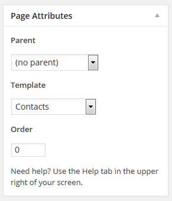After page publishing you will find Google map, please add the map code.
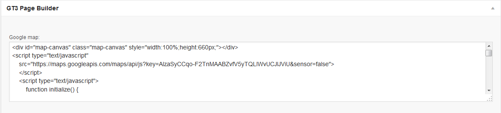Under the Map section is available GT3 Page Builder section, you can add any modules to the page.
Gallery Page
To create a gallery page on your site, please follow the steps below:
- please go to Gallery section in the main WordPress menu and click Add New;
- there is section called "Select Media" in GT3 Page Builder;
- simply click any image that you want to add to the gallery;
- when the image is added to the page builder, hover it and click edit;
- right there you can add Alt, Title and Description to the image, they will appear in the lightbox;
- when gallery is ready, it's time to create a gallery page, please go to the pages and add a new page;
- go to the GT3 Page Builder and add Gallery Module;
- please check the module settings, just click edit. Right there you can select the available gallery from the drop down menu, set the number of images in a row;
- once it is done, please save the changes, and preview the page.
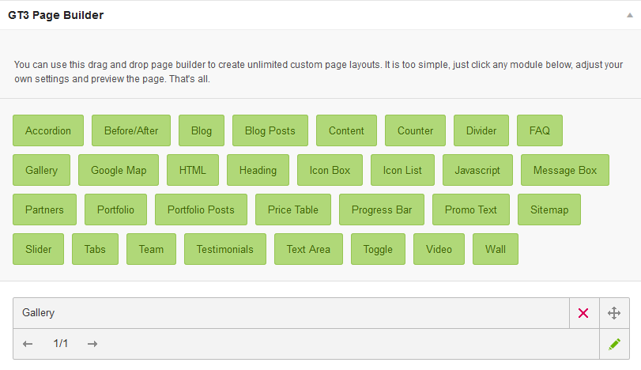
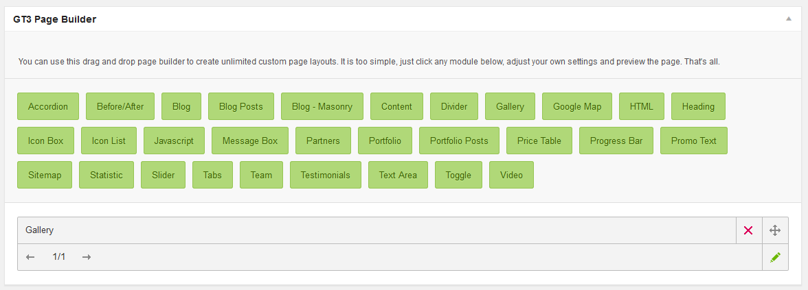
Blog Page
In this section we will explain you on how to setup your blog page using GT3 Page Builder:
- please go to Post section in the main WordPress menu and click Add New;
- the first thing you have to do is to choose the post format, it can be (standard, image, video), you can choose it on the right side in Format section. There will be activated special GT3 slider under Visual Text area where you can upload images. These images will display as featured images in blog listing and inside a post;
- then please add the content to your post page, text, a featured image (very important, it will be a thumbnail for featured posts section);
- please create a blank page in Pages section;
- once the page is created, please add "Blog" module using GT3 Page Builder;
- click edit to adjust blog posts listing settings. Please note, you can select required blog layout: Grid, Masonry or Fullwidth.
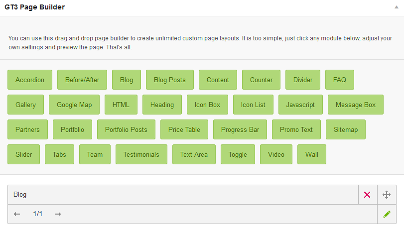
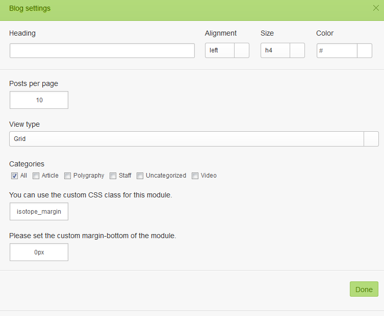
Portfolio Page
Setup Using GT3 Builder
To create a standard portfolio page with columns layout on your site, please follow the steps below:
- please go to Portfolio section in the main WordPress menu and click Add New;
- this is a portfoio item page not the parent potfolio one, sometimes people think that it is a portfolio page;
- the first thing you have to do is to choose the post format, it can be (standard, image, video), you can choose it on the right side in Format section;
- then please add the content to your portfolio item page, text, featured image (very important as it will be a thumbnail for your portoflio page);
- if you want to link the portfolio item from the portfolio page to another resourse which is out of your current site, please use "Advanced Options" below the page builder section;
- you can also add the custom fields to the portfolio item (please use "Advanced Options" below the page builder section), they will be displaying in the tag line, see screenshot below;
- when all the items have been created, it's time to create a portfolio page, please go to the pages and add a new page;
- go to the GT3 Page Builder and add Portfolio Module;
- please check the module settings, just click edit. Right there you can choose number of items per page, view type (Masonry or Grid), default state (Masonry/Grid or Inline), select the category;
- once it is done, please save the changes, and preview the page.
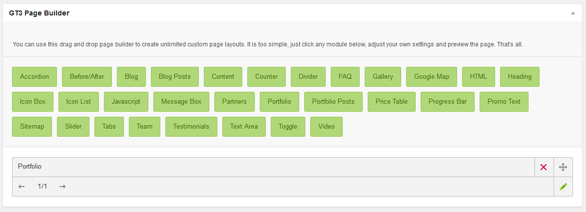
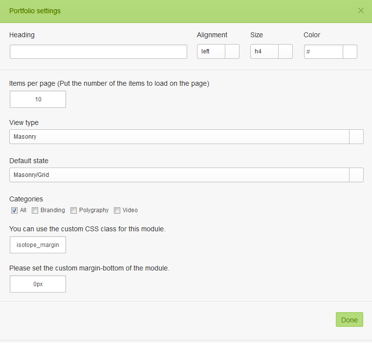
Translation Support
This theme comes with .po, .mo files, they are located in \pure\core\languages\ folder.
Please follow these steps to translate your theme text:
- please download this software and install it http://www.poedit.net/download.php;
- please open theme.po file located here \pure\core\languages\en_US.po using poedit tool and translate the existing text to your own;
- when you save the file, you must name it according to your language;
- upload the file to the required folder on your server, that's all.
Please note that you can also use the special plugins like WPML to do the translation.
Source Files
The theme has 11 PSD source files but they are not included in the free download. But you can purchase them directly from us. The price is only $10 USD. You can send the payment to paypal@gt3themes.com, which is our PayPal email address. Once the payment complete, please contact us and we will send you the source files.